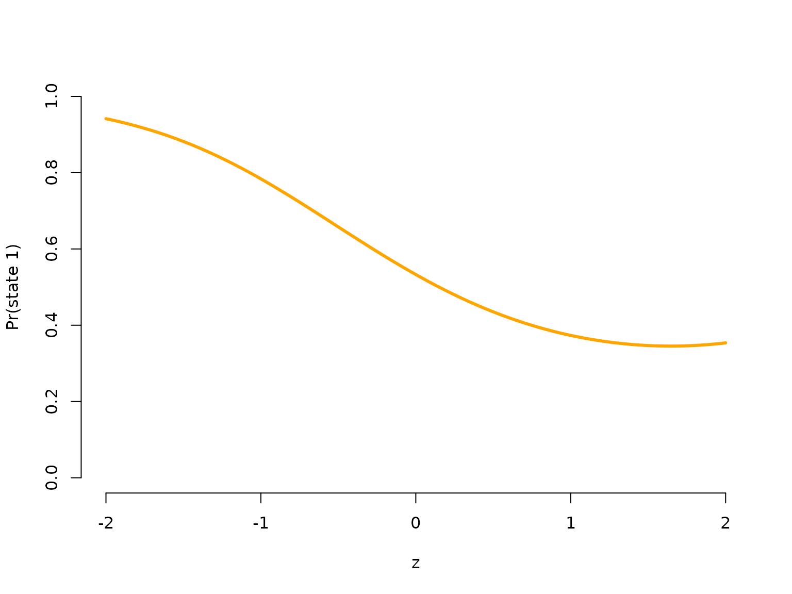

Inhomogeneous HMMs
Jan-Ole Koslik
Inhomogeneous_HMMs.RmdBefore diving into this vignette, we recommend reading the vignette Introduction to LaMa.
This vignette explains how to fit inhomogeneous HMMs, i.e. models
that depend on external covariates with LaMa. Such
inhomogeneity in HMMs can result from covariates affecting the
transition probabilities of the underlying Markov chain, or covariates
affecting the state-dependent distributions, which would then be called
Markov-switching regression. We will begin with effects in the state
process
Covariate effects in the state process
If covariates affect the transition probabilities, this implies that
we model the transition probability matrix as a function of said
covariates. Let
be a vector of covariates of length
for
,
where the first entry is always equal to
to include an intercept. Moreover, let
be a vector of regression parameters, also of length
for each off-diagonal element
()
of the transition probability matrix. First, consider linear predictors
for
.
As the transition probabilities need to be in lie in the interval
and each row of the transition matrix needs to sum to one, we obtain the
transition probabilities via the inverse multinomial logistic link as
where
is set to zero for
for identifiability and
is the number of hidden states. The function tpm_g()
conducts this calculation for all elements of the t.p.m. and all time
points efficiently in C++.
At this point we want to point out that the definition of the
transition probabilities is not necessarily unique. Indeed for data
points at times
we only need
transition probability matrices. The definition above means that the
transition probability between
and
depends on the covariate values at time point
,
but we could also have defined
We want to point out that these two
specifications are not equivalent. For HMMs there is no
established convention, so this choice needs to be made by users and can
be important when the exact timing of the covariate effect is relevant.
In LaMa this comes down to either passing the design matrix
excluding its first or last row to tpm_g(), where we use
the first option in this vignette. If you forget to exclude the first or
the last row of the design matrix when calculating all transition
matrices, and pass an array of dimension c(N,N,T) to
forward_g() for likelihood evaluation, the function will
revert to the first option by just ignoring the first slice of the
array.
Simulation example
We begin by simulating data from the above specified model, assuming
2 states and Gaussian state-dependent distributions. The covariate
effects for the state process are fully specified by a parameter matrix
beta of dimension c(N*(N-1), p+1). By default
the function tpm_g() will fill the off-diagonal elements of
each transition matrix by column, which can be changed by setting
byrow = TRUE. The latter is useful, as popular HMM packages
like moveHMM or momentuHMM return the
parameter matrix such that the t.p.m. needs to be filled by row.
# parameters
mu = c(5, 20) # state-dependent means
sigma = c(4, 5) # state-dependent standard deviations
# state process regression parameters
beta = matrix(c(-2, -2, # intercepts
-1, 0.5, # linear effects
0.25, -0.25), # quadratic effects
nrow = 2)
n = 1000 # number of observations
set.seed(123)
z = rnorm(n) # in practice there will be n covariate values.
# However, we only have n-1 transitions, thererfore we only need n-1 values:
Z = cbind(z, z^2) # quadratic effect of z
Gamma = tpm_g(Z = Z[-1,], beta) # of dimension c(2, 2, n-1)
delta = c(0.5, 0.5) # non-stationary initial distribution
color = c("orange", "deepskyblue")
oldpar = par(mfrow = c(1,2))
zseq = seq(-2,2,by = 0.01)
Gamma_seq = tpm_g(Z = cbind(zseq, zseq^2), beta)
plot(zseq, Gamma_seq[1,2,], type = "l", lwd = 3, bty = "n", ylim = c(0,1),
xlab = "z", ylab = "gamma_12", col = color[1])
plot(zseq, Gamma_seq[2,1,], type = "l", lwd = 3, bty = "n", ylim = c(0,1),
xlab = "z", ylab = "gamma_21", col = color[2])
par(oldpar)Let’s now simulate synthetic data from the above specified model.
s = rep(NA, n)
s[1] = sample(1:2, 1, prob = delta) # sampling first state from initial distr.
for(t in 2:n){
# sampling next state conditional on previous one with tpm at that time point
s[t] = sample(1:2, 1, prob = Gamma[s[t-1],,t-1])
}
# sampling observations conditional on the states
x = rnorm(n, mu[s], sigma[s])
plot(x[1:200], bty = "n", pch = 20, ylab = "x",
col = c(color[1], color[2])[s[1:200]])We now model the transition probabilities parametrically, where we have a paramter for the intercept, the linear effect and the quadratic effect for each off-diagonal element of the t.p.m.
Writing the negative log-likelihood function
Here we specify the likelihood function and pretend we know the polynomial degree of the effect of on the transition probabilities.
nll = function(par, x, Z){
beta = matrix(par[1:6], nrow = 2) # matrix of coefficients
Gamma = tpm_g(Z[-1,], beta) # excluding the first covariate value -> n-1 tpms
delta = c(1, exp(par[7]))
delta = delta / sum(delta)
mu = par[8:9]
sigma = exp(par[10:11])
# calculate all state-dependent probabilities
allprobs = matrix(1, length(x), 2)
for(j in 1:2) allprobs[,j] = dnorm(x, mu[j], sigma[j])
# forward algorithm
-forward_g(delta, Gamma, allprobs)
}Fitting an HMM to the data
par = c(beta = c(-2, -2, rep(0,4)), # initialising with homogeneous tpm
logitdelta = 0, # starting value for initial distribution
mu = c(4, 14), # initial state-dependent means
sigma = c(log(3),log(5))) # initial state-dependents sds
system.time(
mod <- nlm(nll, par, x = x, Z = Z)
)
#> user system elapsed
#> 3.987 0.034 1.135Really fast!
Visualising results
Again, we use tpm_g() and stationary() to
tranform the parameters.
# transform parameters to working
beta_hat = matrix(mod$estimate[1:6], nrow = 2)
Gamma_hat = tpm_g(Z = Z[-1,], beta_hat)
delta_hat = c(1, exp(mod$estimate[7]))
delta_hat = delta_hat / sum(delta_hat)
mu_hat = mod$estimate[8:9]
sigma_hat = exp(mod$estimate[10:11])
# we calculate the average state distribution overall all covariate values
zseq = seq(-2, 2, by = 0.01)
Gamma_seq = tpm_g(Z = cbind(zseq, zseq^2), beta_hat)
Prob = matrix(nrow = length(zseq), ncol = 2)
for(i in 1:length(zseq)){ Prob[i,] = stationary(Gamma_seq[,,i]) }
prob = apply(Prob, 2, mean)
hist(x, prob = TRUE, bor = "white", breaks = 20, main = "")
curve(prob[1]*dnorm(x, mu_hat[1], sigma_hat[1]), add = TRUE, lwd = 3,
col = color[1], n=500)
curve(prob[2]*dnorm(x, mu_hat[2], sigma_hat[2]), add = TRUE, lwd = 3,
col = color[2], n=500)
curve(prob[1]*dnorm(x, mu_hat[1], sigma_hat[1])+
prob[2]*dnorm(x, mu[2], sigma_hat[2]),
add = TRUE, lwd = 3, lty = "dashed", n = 500)
legend("topright", col = c(color[1], color[2], "black"), lwd = 3, bty = "n",
lty = c(1,1,2), legend = c("state 1", "state 2", "marginal"))
oldpar = par(mfrow = c(1,2))
plot(zseq, Gamma_seq[1,2,], type = "l", lwd = 3, bty = "n", ylim = c(0,1),
xlab = "z", ylab = "gamma_12_hat", col = color[1])
plot(zseq, Gamma_seq[2,1,], type = "l", lwd = 3, bty = "n", ylim = c(0,1),
xlab = "z", ylab = "gamma_21_hat", col = color[2])
par(mfrow = c(1,1))
plot(zseq, Prob[,1], type = "l", lwd = 3, bty = "n", ylim = c(0,1), xlab = "z",
ylab = "Pr(state 1)", col = color[1])
par(oldpar)Covariate effects in the state-dependent process
We now look at a setting where covariates influence the mean of the state-dependent distribution, while the state switching is controlled by a homogeneous Markov chain. This is often called Markov-switching regression. Assuming the observation process to be conditionally normally distributed, this means
Simulation example
First we specify parameters for the simulation. The important change
here is that beta now contains the regression coefficients
for the state-dependent regressions.
sigma = c(1, 1) # state-dependent standard deviations (homoscedasticity)
# parameter matrix
# each row contains parameter vector for the corresponding state
beta = matrix(c(8, 10, # intercepts
-2, 1, 0.5, -0.5), # slopes
nrow = 2)
n = 1000 # number of observations
set.seed(123)
z = rnorm(n)
Z = cbind(z, z^2) # quadratic effect of z
Gamma = matrix(c(0.9, 0.1, 0.05, 0.95),
nrow = 2, byrow = TRUE) # homogeneous t.p.m.
delta = stationary(Gamma) # stationary Markov chainSimulation
In the simulation code, the state-dependent mean now is not fixed
anymore, but changes accoring to the covariate values in
Z.
s = x = rep(NA, n)
s[1] = sample(1:2, 1, prob = delta)
x[1] = rnorm(1, beta[s[1],]%*%c(1, Z[1,]), # state-dependent regression
sigma[s[1]])
for(t in 2:n){
s[t] = sample(1:2, 1, prob = Gamma[s[t-1],])
x[t] = rnorm(1, beta[s[t],]%*%c(1, Z[t,]), # state-dependent regression
sigma[s[t]])
}
oldpar = par(mfrow = c(1,2))
plot(x[1:400], bty = "n", pch = 20, ylab = "x",
col = c(color[1], color[2])[s[1:400]])
plot(z[which(s==1)], x[which(s==1)], pch = 16, col = color[1], bty = "n",
ylim = c(0,15), xlab = "z", ylab = "x")
points(z[which(s==2)], x[which(s==2)], pch = 16, col = color[2])
par(oldpar)Writing the negative log-likelihood function
In the likelihood function, we also add the state-dependent
regression in the loop calculating the state-dependent probabilities.
The code cbind(1,Z) %*% beta[j,] computes the linear
predictor for the
-th
state.
nllMSR = function(par, x, Z){
Gamma = tpm(par[1:2]) # homogeneous tpm
delta = stationary(Gamma) # stationary Markov chain
beta = matrix(par[2 + 1:(2 + 2*2)], nrow = 2) # parameter matrix
sigma = exp(par[2 + 2 + 2*2 + 1:2])
# calculate all state-dependent probabilities
allprobs = matrix(1, length(x), 2)
# state-dependent regression
for(j in 1:2) allprobs[,j] = dnorm(x, cbind(1,Z) %*% beta[j,], sigma[j])
# forward algorithm
-forward(delta, Gamma, allprobs)
}Visualising results
To visualise the results, be transform the parameters to working parameters and add the two estimated state-specific regressions to the scatter plot.
Gamma_hat_reg = tpm(mod_reg$estimate[1:2]) # calculating all tpms
delta_hat_reg = stationary(Gamma_hat_reg)
beta_hat_reg = matrix(mod_reg$estimate[2+1:(2*2+2)], nrow = 2)
sigma_hat_reg = exp(mod_reg$estimate[2+2*2+2 +1:2])
# we have some label switching
plot(z, x, pch = 16, bty = "n", xlab = "z", ylab = "x", col = color[s])
points(z, x, pch = 20)
curve(beta_hat_reg[1,1] + beta_hat_reg[1,2]*x + beta_hat_reg[1,3]*x^2,
add = TRUE, lwd = 4, col = color[2])
curve(beta_hat_reg[2,1] + beta_hat_reg[2,2]*x + beta_hat_reg[2,3]*x^2,
add = TRUE, lwd = 4, col = color[1])
Continue reading with Periodic HMMs, LaMa and RTMB, or Penalised splines.